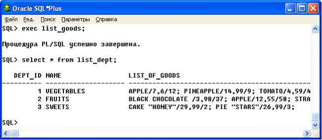

Практика 2. Использование подпрограмм в языках программирования 4-го поколения
Работа со встроенными фукнциями
Данные поля name (таблицы Goods) перевести в верхний регистр. |
SELECT UPPER(NAME) FROM GOODS;
Для произвольной строки вывести подстроку прописными символами. Подстрока длиной LEN и начинается с позиции POS . |
CREATE OR REPLACE FUNCTION F2
(STR IN VARCHAR2, POS NUMBER, LEN NUMBER) RETURN VARCHAR2 AS
STR_2 VARCHAR2 (20);
BEGIN
STR_2:=UPPER( SUBSTR (STR, POS, LEN));
RETURN STR _ 2 ;
END ;
Вызов функции F2 может быть такой:
SQL> SELECT F2('qwertyu', 2, 4);
Рассмотрим пример вызова в SQL*Plus встроенной функции преобразования типов данных ( TO _ CHAR ) |
SQL> SELECT TO_CHAR(SYSDATE, YEAR MONTH DAY DD') FROM DUAL;
Функция первый параметр получает с помощью другой встроенной функции SYSDATE , а затем полученное значение приводит к формату YEAR MONTH DAY DD '. Таким образом, показанные вызов функции позволяет вернуть текущую дату в формате: год прописью, название месяца, название дня недели и число.
Создание пользовательских функций
Написать функцию, которая возвращает значение определенной статистики по некоторому столбцу некоторой таблицы. Например, для таблицы Goods подсчитать количество строк со значением поля PRICE меньше среднего. |
CREATE OR REPLACE FUNCTION LESS_THAN_AVG RETURN INTEGER AS
ROW_COUNT INTEGER;
BEGIN
SELECT COUNT(*) INTO ROW_COUNT FROM GOODS
WHERE PRICE <
(SELECT AVG(PRICE) FROM GOODS);
RETURN ROW_COUNT;
END LESS_THAN_AVG;
Определить функцию, которая получает в качестве параметра цену и возвращает количество записей в таблице Goods со значением поля PRICE меньше заданного. |
CREATE OR REPLACE FUNCTION count_goods (new_price IN Goods.price%TYPE)
RETURN INTEGER
IS temp_count Goods.Quantity%TYPE;
BEGIN
SELECT COUNT(*) INTO temp_count FROM Goods
WHERE price < new_price;
RETURN(temp_count);
END count_goods;
Создание и работа с сохраняемыми процедурами
Написать процедуру, которая добавляла бы новые отделы в таблицу Departments. |
Для этого понадобится последовательность, с помощью которой мы можем задавать первичный ключ таблицы (последовательность должна начинаться с номера, следующего за последним номером, который вы использовали для добавления отделов в таблицу).
CREATE SEQUENCE dept_seq START WITH 4;
CREATE PROCEDURE insert_dept (new_name VARCHAR2, new_info VARCHAR2 DEFAULT New department ) AS
BEGIN
INSERT INTO Departments VALUES (dept_seq.NEXTVAL, new_name, new_info);
END insert_dept;
Вызов процедуры производится с помощью команды EXEC:
EXEC insert_dept ('SWEETS');
Написать процедуру, которая для товара с заданным номером изменяет цену на заданную.При вызове этой процедуры использовать позиционную и именную нотации |
CREATE PROCEDURE change _ price ( good _ id 1 NUMBER , price 1 NUMBER ) IS
BEGIN
UPDATE goods SET price = price1 WHERE good_id = good_id1;
END change _ price ;
При вызове подпрограммы можно записывать фактические параметры, используя позиционную или именную нотацию. Иными словами, можно указывать соответствие между фактическими и формальными параметрами через позиции этих параметров или через их имена.
Можно вызвать процедуру change _ price четырьмя логически эквивалентными способами:
DECLARE
change_goods NUMBER(4):=2;
new_price NUMBER(8,2):=10;
BEGIN
change_price(change_goods, new_price); -- позиционная нотация
change_price(change_goods=> goods_id1, new_price=> price1); -- именная нотация
change_price(new_price=> price1, change_goods=> goods_id1); -- именная нотация
change_price(change_goods, new_price=> price1); -- смешанная нотация
END;
Написать процедуру покупки товара - занесение данных в таблицу Sales и изменение количества товаров, имеющихся в наличии. В случае недостачи товара - покупку не фиксировать и выводить сообщение не «хватает Х единиц товара», где Х - недостающее количество.Для этого понадобится последовательность, с помощью которой задавать первичный ключ таблицы Sales |
CREATE SEQUENCE Sales_seq START WITH 4;
CREATE OR REPLACE PROCEDURE ins_sale (new_check NUMBER, new_good_id NUMBER, new_date DATE DEFAULT SYSDATE, need_quantity INTEGER DEFAULT 1) AS
quantity1 INTEGER;
BEGIN
SELECT quantity INTO quantity1 FROM Goods WHERE good_id=new_good_id;
IF quantity1 < need_quantity THEN
DBMS_OUTPUT.put_line ( Не хватает || (need_quantity-quantity1) || единиц товара);
/* Для вывода на экран используем процедуру put_line пакета вивода DBMS_OUTPUT */
ELSIF quantity1 = need_quantity THEN
DELETE FROM Goods WHERE good_id=new_good_id;
INSERT INTO Sales VALUES (Sales_seq.nextval, new_check, new_good_id, new_date, need_quantity);
COMMIT;
ELSE
UPDATE Goods SET quantity = quantity - need_quantity WHERE good_id=new_good_id;
INSERT INTO Sales VALUES (Sales_seq.nextval, new_check, new_good_id, new_date, need_quantity);
COMMIT;
END IF;
END ins_sale
Для вывода информации с использованием стандартных функций необходимо включить режим вывода:
SET SERVEROUT ON;
Следует обратить внимание на то, что при удалении информации о товаре, количество которого равно заданному (тому, что желает приобрести покупатель) может возникнуть ошибка выполнения программы, связанная с наличием порожденных записей в таблице Sales (предварительные операции покупки этого же товара). Необходимо переделать процедуру с учетом такой ситуации.
Использование явных курсоров
Необходимо сформировать таблицу-описание товаров, хранящихся во всех отделах, в виде показанном в таблице 7. |
Таблица 7 - Вид результирующей таблицы
Dept_id | Name | List_of_goods: goods/quantity/price; |
1 | VEGETABLES | APPLE/7.6/12; PINEAPPLE/14.99/9; |
2 | ... | ... |
Для ведения данной таблицы понадобится последовательность:
CREATE SEQUENCE list_seq;
Команда создания таблицы-описания приведена ниже:
CREATE TABLE list_dept (
Dept_id NUMBER(3) NOT NULL PRIMARY KEY,
Name VARCHAR2(20),
list_of_goods VARCHAR2(2000));
Приведем пример реализации этой процедуры с помощью явного описания курсоров и обращения к атрибутам явных курсоров:
CREATE OR REPLACE PROCEDURE list_goods AS
-- курсор для получения всего перечня отделов
CURSOR list_dept IS
SELECT dept_id, name FROM Departments;
/* курсор для получения информации о товарах, находящихся в заданном отделе */
CURSOR l_goods (dept_n1 NUMBER) IS
SELECT Name, Price, Quantity FROM Goods
WHERE Dept_id=dept_n1;
Dept_id1 Departments.Dept_id%Type;
Name1 Departments.Name%Type;
Name_G Goods.Name%Type;
Quantity1 Goods.Quantity%Type;
Price1 Goods.Price%Type;
list_goods VARCHAR2(200) := '';
BEGIN
DELETE FROM list_dept;
IF List_dept%isopen THEN Close List_dept;
End if;
OPEN list_dept;
LOOP
FETCH list_dept INTO Dept_id1, Name1;
EXIT WHEN list_dept%NOTFOUND;
OPEN l_goods(Dept_id1);
list_goods:='';
LOOP
FETCH l_goods INTO Name_G, Price1, Quantity1;
EXIT WHEN l_goods%NOTFOUND;
list_goods:= list_goods|| Name_G||'/'|| Price1 || '/'|| Quantity1 || '; ';
END LOOP;
CLOSE l_goods;
INSERT INTO list_dept VALUES (Dept_id1, Name1, list_goods);
END LOOP;
CLOSE list_Dept;
COMMIT;
END;
Вызов и результат выполнения процедуры приведены на рис. 13

Рисунок 13 - Вызов и результат работы процедуры
Самостоятельно разработайте процедуру заполнения аналогичной таблицы с использованием курсорных циклов. |
Обработка исключений
Разработайте процедуру снижения цены на заданные товары на заданную сумму. Следует предусмотреть такие исключительные ситуации: - если количество товара не превышает 10, а новая цена составляет мене чем 50% от старой цены, то ошибка «Большая скидка»; - если количество товара более 100, а новая стоимость составляет более чем 90% от старой цены, то ошибка «Маленькая скидка»; -если не найдено такого товара, необходимо вывести предупреждение: «Такого товара не существует». |
CREATE OR REPLACE PROCEDURE Discount (G_name VARCHAR2, Price1 NUMBER) AS
Good_Id1 Goods.Good_id%type;
Price_g Goods.Price%type;
Quantity_g Goods.Quantity%type;
Low_disc EXCEPTION;
Big_disc EXCEPTION;
BEGIN
SELECT Good_id, Price, Quantity INTO Good_id1, Price_g, Quantity_g
FROM Goods
WHERE Upper(Name) like '%'||Upper(G_name)||'%' AND ROWNUM=1;
IF ((Price_G*0.5)>(price_g-price1) and Quantity_g<10) THEN RAISE Big_Disc;
ELSIF (Price_G*0.9<(price_g-price1) and Quantity_g>100) THEN RAISE Low_Disc;
END IF;
UPDATE Goods SET Price=Price-Price1 WHERE Good_id=Good_id1;
Commit;
EXCEPTION
WHEN Low_disc THEN
Raise_application_error (-20002, 'Low discount');
WHEN Big_disc THEN
Raise_application_error (-20003, 'Big discount');
WHEN NO_DATA_FOUND THEN
Raise_application_error (-20001, 'No such good');
END;
/
Задачи для самостоятельного выполнения
Разработайте функцию обработки данных из таблиц. Примеры заданий: −разработайте функцию, которая по названию отдела (входной параметр) возвращает суммарную стоимость товаров этого отдела; − разработайте функцию, которая по названию отдела (входной параметр) возвращает наименование товара, количество которого является максимальной; −разработайте функцию, которая по названию изготовителя (входной параметр) возвращает наименование его дешевого товара (любого). |
Разработайте процедуру, которая выполняет действия модифицирования данных таблиц, созданных в предыдущей лабораторной работе. Примеры заданий: −для товаров из заданного отдела, которые дороже заданной цены, в поле Description написать «Дорогой товар», а для остальных его товаров- «Дешевый товар»; − провести снижение цены товаров, которые находятся в заданном отделе на заданное число процентов; − для заданного отдела в поле Info записать текущую дату. |
Разработайте функцию формирования выходной строки через запятую. Примеры заданий: −входной параметр - название отдела, результат - список наименований товаров, которые находятся в заданном отделе; − входные параметры - диапазон цен (m і n), результат - список товаров с ценой в заданном диапазоне; − список номеров чеков, по которым было приобретено товаров на сумму меньше заданной как входной параметр. |
Разработайте процедуру с использованием курсоров . Примеры заданий: − процедура закупки - заполнить таблицу закупки (поля: производитель, название товара, цена, размер закупки) такими данными: если price>1000, то нужно 10 единиц товара, если 500<price<1000, то нужно 20 единиц, если price<500, то - 30 единиц; − выбрать и записать в таблицу по два самых дешевых товара отдела (поля: производитель, товар, цена); − процедура разбиения товара на ценовые группы (входной параметр - количество групп). Сформировать таблицу с такими полями: номер группы, минимальная цена в группе, максимальная цена в группе, список товаров группы через запятую. |
Далее следует выполнить лабораторную работу 2